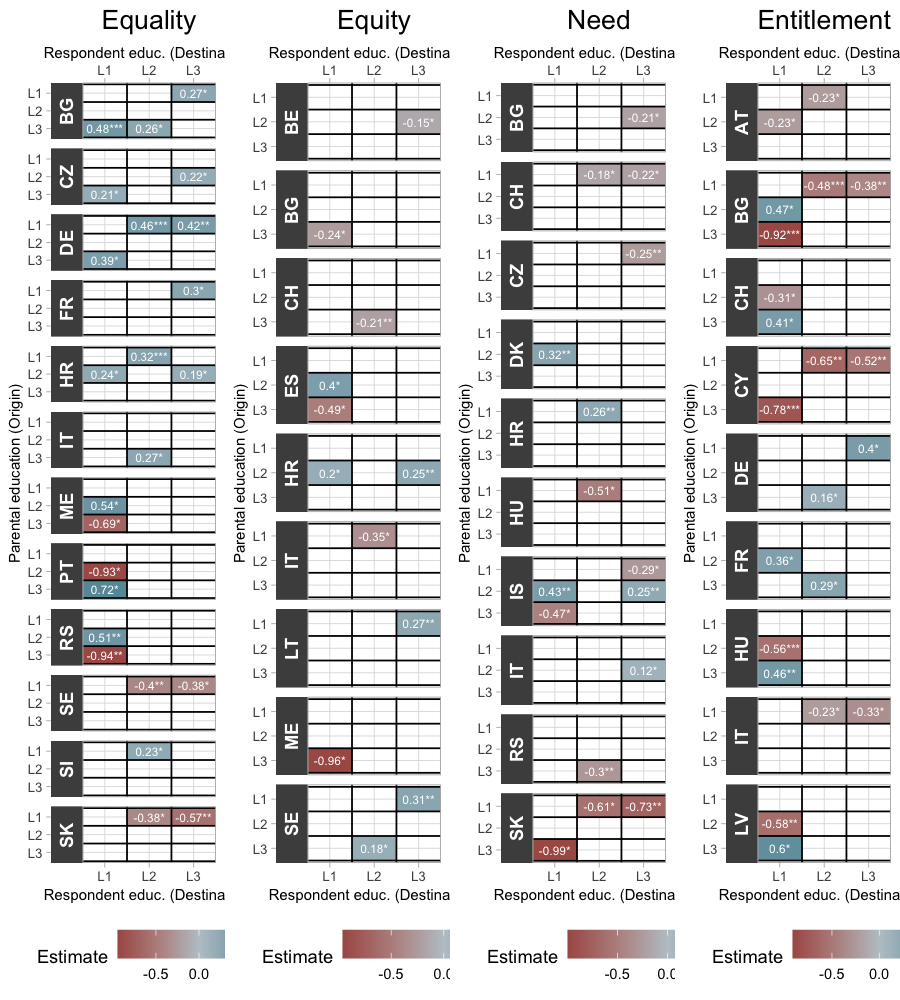

‘I guess we are from very different backgrounds’:
Educational Mobility and Attitudes Towards Social Justice in Europe
In this website, we summarise the results of the paper title that is available link-paper. All the code and data required to reprodue the analysis described here is available in this link-repository.
1 What is this research about?
The book ‘Normal People’ by Sally Rooney (2018) offers a delicate portrayal of a social phenomenon addressed in this study. Connel, one of the main characters, comes from a working-class family in the country side and is admitted to study in a prestigious university in the capital. The story develops around his relationship with Marianne, who is also studying at the same university and is from a wealthy background with her mother being the employer of Connel’s mother. In a passage of the book, they are having a coffee after receiving the news that both of them got a scholarship, but one of Marianne’s friend did not get it.
Marianne said she was worried about Peggy, who was the only one of the three of them not to get the scholarship. She said it would be hard on her.
Connell inhaled and said nothing. Peggy didn’t need subsidised tuition or free on-campus accommodation, because she lived at home in Blackrock and her parents were both doctors, but Marianne was intent on seeing the scholarships as a matter of personal feeling rather than economic fact. Anyway, I’m happy for you, Marianne said.
I’m happy for you too.
But you deserve it more.
He looked up at her. He wiped his mouth with the napkin. You mean in terms of the financial stuff? he said.
Oh, she replied. Well, I meant that you’re a better student. She looked down critically at her croissant. He watched her. Though in terms of financial circumstances too, obviously, she said. I mean, it’s kind of ridiculous they don’t means-test these things. I guess we’re from very different backgrounds, class-wise.
The theme of a relationship across different social classes is surely not new. But this story in particular unveils subtleties about two individuals who had similar formal education but whose parents had different educational and social experiences and how this affects their views of society, what is fair and what is just.
Inequality and social justice are pressing topics for academics and policy makers in the first quarter of this century. From one side, a solid research agenda has been assessing the rising in social inequalities and its consequences (Savage 2021). On the other side, a global development policy agenda has been established with a strong focus on these topics (Fukuda-Parr 2019). However, there is still a lack of evidence on both sides about how individuals perceive and view social justice and what are the factors that influence those views (Benson et al. 2021), despite several studies observing relevant social and political consequences of social justice and inequality attitudes Adriaans (2023). Despite a relatively recent research agenda on factors associated with welfare attitudes (Oorschot et al. 2022), income inequality (Clark and D’Ambrosio 2015) and social justice attitudes (Adriaans and Fourré 2022; Reyes and Gasparini 2022; Steele and Breznau 2019), there is still insufficient evidence on the determinants of such attitudes, especially the role of educational mobility.
In this work, we contribute to expanding this literature by investigating the relationship between attitudes towards social justice and educational mobility. Two main aspects are important in this endeavour. First, the focus on mobility which provides a more complex understanding of the influence of social stratification by assessing social positions not only within but also across generations. Secondly, this approach also emphasises education as a social process that goes beyond human capital acquisition, shaping perceptions and normative attitudes in relation to social matters. In this sense, intergenerational mobility in educational attainment translates not only into a change in material conditions (i.e. occupation, income) but also in the way individuals view social justice.
With this intent, we investigated the relationship between intergenerational educational mobility and attitudes towards social justice aiming to respond the following two main questions:
- Does the experience of upward mobility predict attitudes towards principles of social justice?
- Is the educational level of the origin (parental) or the destination (respondent’s) more influential in shaping attitudes toward social justice?
2 How was it conducted?
2.1 Data
The analysis is based on the rotating module of the European Social Survey Round 9 on justice and fairness. The European Social Survey (ESS) is a biennial cross-national survey of attitudes and employs cross-sectional, probability samples that are representative of the population aged 15 and above living in private households in each country. The analytical sample of this study includes data from all the 29 participating countries and excludes observations from respondents who were still in formal education age (24 or younger) resulting in a sample of 44,584.
The theoretical framework underlying the outcome variables emphasises the importance of investigating individuals’ normative orientations in relation to how society should be organised in order to explain objective conditions of inequality and social justice (Hadler 2005). Following this principle, Hülle et al. (2018) propose a quantitative assessment of individuals’ normative orientations in relation to social justice. The Basic Social Justice Orientations (BSJO) scale include questions validated originally using social surveys in Germany but that have also been tested in different European contexts (Adriaans 2023; Van Hootegem, Meuleman, and Abts 2021).
The questions designed by Hülle et al. (2018) aimed at assessing the following four principles of social justice: Equality, Equity, Need, and Entitlement. The exact wording of the statements and their respective associated principle are shown in Table 1.
| Principle | Variable | Wording |
|---|---|---|
| Equality | sofrdst | A society is fair when income and wealth are equally distributed among all people |
| Equity | sofrwrk | A society is fair when hard-working people earn more than others |
| Need | sofrpr | A society is fair when it takes care of those who are poor and inn need regardless of what they give back to society |
| Entitlement | sofrprv | A society is fair when people from families with social status enjoy privileges in their lives between |
The responses were recorded through a 5-point agreement scale with the following options: “Agree strongly”, “Agree”, “Neither agree nor disagree”, “Disagree”, and “Disagree strongly”. The original scale was inverted so higher values denote higher level of agreement, ranging from 1 to 5.
2.2 Explanatory variable (education)
The measurement of educational attainment level in the European Social Survey is based on the International Standard Classification of Education (ISCED) (UNESCO Institute for Statistics 2012). Following a harmonization work conducted by the ESS (Schneider 2020), we utilised the following levels to measure educational attainment variable: (1) less than lower secondary; (2) lower secondary; (3) lower tier upper secondary; (4) upper tier upper secondary; (5) advanced vocational, sub-degree; (6) lower tertiary education, BA level; and (7) higher tertiary education, >= MA level.
This variable is utilised as it is in the analysis of the pooled sample of all countries together. However, due to the relatively small sample sizes found within countries, these categories were collapsed to allow for enough observations in each cell of the mobility tables. For the analysis comparing different countries, the educational attainment is measured in the following categories: (L1) lower than secondary; (L2) secondary; and (L3) tertiary. The Figure 1 below shows the flows between origin (parental education) and destination (respondent’s education).
2.3 Covariates
The analysis also takes into consideration a group of covariates such as age, gender and feeling about household income.
Table 1 below shows the mean values and standard error od the mean for outcome variable by covariates. As alluded in the section describing the explanatory variables, the three levels shown in Table 1 were used only for the analysis by country. The initial analysis with the pooled sample of all countries used the original 7-level scale (eisced).
| Equality | Equity | Need | Entitlement | |||||
|---|---|---|---|---|---|---|---|---|
| Mean | Std. Error | Mean | Std. Error | Mean | Std. Error | Mean | Std. Error | |
| Educ. attainment (Resp.) | ||||||||
| L1 | 3.57 | (0.01) | 3.97 | (0.01) | 3.90 | (0.01) | 2.24 | (0.01) |
| L2 | 3.56 | (0.01) | 3.99 | (0.01) | 3.87 | (0.01) | 2.08 | (0.01) |
| L3 | 3.08 | (0.01) | 3.94 | (0.01) | 3.92 | (0.01) | 2.09 | (0.01) |
| Educ. attainment (Parent.) | ||||||||
| L1 | 3.52 | (0.01) | 3.98 | (0.01) | 3.89 | (0.01) | 2.15 | (0.01) |
| L2 | 3.41 | (0.01) | 3.95 | (0.01) | 3.86 | (0.01) | 2.09 | (0.01) |
| L3 | 3.08 | (0.01) | 3.95 | (0.01) | 3.93 | (0.01) | 2.15 | (0.01) |
| Mobility direction | ||||||||
| Downward | 3.36 | (0.02) | 3.96 | (0.01) | 3.89 | (0.01) | 2.27 | (0.02) |
| Nonmobile | 3.42 | (0.01) | 3.96 | (0.01) | 3.90 | (0.01) | 2.16 | (0.01) |
| Upward | 3.38 | (0.01) | 3.97 | (0.01) | 3.89 | (0.01) | 2.07 | (0.01) |
| Age group | ||||||||
| 25-44 | 3.33 | (0.01) | 3.94 | (0.01) | 3.86 | (0.01) | 2.18 | (0.01) |
| 45-64 | 3.40 | (0.01) | 3.97 | (0.01) | 3.91 | (0.01) | 2.10 | (0.01) |
| 65+ | 3.48 | (0.01) | 3.98 | (0.01) | 3.93 | (0.01) | 2.13 | (0.01) |
| Gender | ||||||||
| Female | 3.44 | (0.01) | 3.93 | (0.01) | 3.89 | (0.01) | 2.14 | (0.01) |
| Male | 3.35 | (0.01) | 4.00 | (0.01) | 3.90 | (0.01) | 2.13 | (0.01) |
| Feeling about income | ||||||||
| Very difficult | 3.79 | (0.02) | 3.96 | (0.02) | 4.01 | (0.02) | 2.11 | (0.02) |
| Difficult | 3.72 | (0.01) | 3.94 | (0.01) | 3.90 | (0.01) | 2.10 | (0.01) |
| Coping | 3.46 | (0.01) | 3.96 | (0.01) | 3.85 | (0.01) | 2.15 | (0.01) |
| Living comfortably | 3.09 | (0.01) | 3.98 | (0.01) | 3.94 | (0.01) | 2.13 | (0.01) |
| Full sample | 3.40 | (0.01) | 3.96 | (0) | 3.89 | (0) | 2.13 | (0) |
| Source: European Social Survey (Round 9) | ||||||||
2.4 Analytical approach
Educational mobility is a dynamic process that involves both origin status (i.e. parental education) and a destination status (i.e. one’s own education), which cannot be considered independently.
In this analysis, we adopted a new method called Mobility Contrast Model (MCM) recently developed by Luo (2022). This method allowed us to estimate the effect of intergenerational mobility independent from the educational attainment, also considering heterogeneous effects of mobility, which can result from the direction (upward or downward) or range of the mobility (number of levels between origin and destination).
3 What are the results?
3.1 Mobility effects (all countries)
Table 2 shows the mobility effects for all outcome variables by mobility status. The results differ considerably depending on the outcome variable.
The analysis provides evidence that intergenerational educational mobility is associated with the principle of Equality. The strongest effects are found among those whose parents completed the lowest educational level (L1) and who finished either the Level 6 (\(\beta\) = 0.256, p <.05), Level 5 (\(\beta\) = 0.237, p <.05), or Level 4 (\(\beta\) = 0.201, p <.05). The gradual increase in the effect size also suggests that more steps in the upward mobility result in stronger support for the principle of Equality. On the other hand, for one group who experienced a “shorter” journey of upward mobility (L3 to L6), we observed significant negative effects. Overall no significant downward mobility effects were detected in the model.
| Parental educ. level |
Respondents' educational level | ||||||
|---|---|---|---|---|---|---|---|
| L1 | L2 | L3 | L4 | L5 | L6 | L7 | |
| Equality | |||||||
| L1 | – | 0.058 | 0.126 | 0.201* | 0.237* | 0.256* | 0.066 |
| L2 | 0.13 | – | 0.05 | 0.047 | 0.161* | 0.207** | 0.12 |
| L3 | -0.212 | 0.018 | – | 0.028 | -0.067 | -0.166* | -0.056 |
| L4 | 0.107 | -0.029 | 0.101 | – | -0.102 | -0.043 | -0.017 |
| L5 | 0.06 | 0.13 | -0.067 | -0.107 | – | -0.117 | 0.036 |
| L6 | 0.077 | 0.081 | -0.195 | -0.069 | -0.08 | – | -0.057 |
| L7 | -0.07 | -0.165 | 0.078 | -0.007 | -0.056 | -0.044 | – |
| Equity | |||||||
| L1 | – | -0.009 | -0.038 | -0.119 | -0.063 | -0.041 | -0.021 |
| L2 | -0.134 | – | -0.036 | 0.029 | 0.029 | 0.022 | 0.009 |
| L3 | 0.012 | 0.095 | – | -0.005 | 0.092* | 0.034 | -0.053 |
| L4 | -0.038 | -0.137 | -0.087 | – | -0.116 | -0.07 | 0.016 |
| L5 | 0.071 | -0.09 | 0.054 | 0.075 | – | -0.005 | 0.018 |
| L6 | 0.191 | 0.149 | 0.114 | 0.015 | 0.007 | – | 0.008 |
| L7 | -0.126 | -0.033 | -0.031 | -0.019 | 0.026 | 0.037 | – |
| Need | |||||||
| L1 | – | 0.033 | -0.028 | 0.023 | 0.024 | 0.001 | -0.1 |
| L2 | -0.194 | – | -0.076 | -0.017 | -0.015 | -0.003 | -0.02 |
| L3 | -0.065 | -0.087 | – | -0.067 | -0.012 | -0.07 | 0.007 |
| L4 | -0.147 | 0.043 | -0.007 | – | -0.023 | -0.057 | -0.021 |
| L5 | 0.2 | 0.073 | 0.065 | 0.078 | – | 0.047 | 0.094 |
| L6 | 0.14 | -0.015 | -0.059 | -0.13 | 0.096 | – | -0.023 |
| L7 | 0.002 | -0.108 | 0.043 | 0.05 | -0.133* | 0.02 | – |
| Entitlement | |||||||
| L1 | – | -0.031 | 0.081 | 0.013 | 0.07 | 0.14 | 0.067 |
| L2 | 0.074 | – | 0.013 | -0.019 | 0.045 | 0.108 | 0.028 |
| L3 | 0.137 | -0.008 | – | -0.092 | -0.088 | -0.069 | -0.094 |
| L4 | 0.079 | -0.156* | -0.014 | – | 0.027 | -0.085 | 0.078 |
| L5 | -0.093 | 0.06 | 0.11 | 0.075 | – | -0.061 | 0.037 |
| L6 | -0.085 | 0.06 | -0.19* | -0.13 | -0.068 | – | -0.163* |
| L7 | -0.158 | 0.028 | -0.046 | 0.108 | -0.033 | -0.078 | – |
| Source: European Social Survey (Round 9) Notes: *p < .05, **p< .01, ***p < .001 |
|||||||
3.2 Mobility effects (by country)
The samples from 6 countries out of the 29 participating countries did not indicate any statistically significant mobility effect: United Kingdom, Hungary, Lithuania, Latvia, Netherlands, and Norway. Figure 2 below shows the coefficients of the mobility effects for all the remaining countries.

The analysis of the pooled sample indicated a significant mobility effect from those whose origins lie in the lowest levels and destination in the highest levels. The same result can be observed in the French sample (FR), where the mobility from Level 1 to Level 3 is associated with additional 0.29 units in the scale of Equality (p<0.05). However, two cases go in the opposite direction. Portugal (PT) and Sweden (SE) have a very similar structure of mobility effect in which upward mobility from Level 1, either to Level 2 or 3, is associated with lower support for Equality. Also in both countries a negative effect is found among those in Level 1 whose parents were in Level 3. This suggests a country-level difference in relation to the effects of mobility on support for Equality.
For the principle of Equity, most of mobility effects have a positive coefficient denoting that an intergenerational mobility in educational attainment is associated with higher support for this principle in most countries (either downward or upward) in almost all countries with the exception of Montenegro.
The German (DE) case in this model also presents evidence on the qualitative differences between mobility groups. The significant effects were found only for groups with one-step mobility (both downward and upward) whereas no statistically significant effects were found across groups with “longer” mobility (two steps).
Similarly, there is a prevalence of positive effects for the principle of Need. The exceptions here are Serbia (RS) and Slovakia (SK) where either upward or downward mobility is associated with lower support for this principle of justice.
Finally, as opposed to the other principles, the intergenerational mobility effects are generally associated with lower support for the principle of Entitlement.